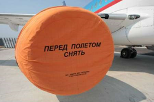

1 Introduction
People have always copied things. In
the past, most items of value were physical objects.
Patent law and economies of scale meant that small scale copying
of physical objects was usually uneconomic, and large-scale
copying (if it infringed) was stoppable using policemen and courts.
Today, things of value are increasingly less tangible:
often they are just bits and bytes or can be accurately represented
as bits and bytes.
The widespread deployment of packet-
switched networks and the huge advances in computers and codec-
technologies has made it feasible (and indeed attractive) to
deliver such digital works over the Internet. This
presents great opportunities and great challenges. The
opportunity is low-cost delivery of personalized, desirable high-
quality content. The challenge is that such content can be
distributed illegally. Copyright law governs the
legality of copying and distribution of such valuable data, but
copyright protection is increasingly strained in a world of
programmable computers and high-speed networks.
For example, consider the staggering
burst of creativity by authors of computer programs that are
designed to share audio files. This was first
popularized by Napster, but today several popular applications and
services offer similar capabilities. CD-writers have
become mainstream, and DVD-writers may well follow suit.
Hence, even in the absence of network connectivity, the opportunity
for low-cost, large-scale file sharing exists.
2 The Darknet
Throughout this paper, we will call the
shared items (e.g. software programs, songs, movies, books, etc.)
objects. The persons who copy objects will be called
users of the darknet, and the computers used to share objects will
be called hosts
The darknet is the distribution network
that emerges from the injection of objects according to assumption
1 and the distribution of those objects according to
assumptions 2 and 3.
One implication of the first assumption
is that any content protection system will leak popular or
interesting content into the darknet, because some fraction of
users--possibly experts–will overcome any copy prevention
mechanism or because the object will enter the darknet before
copy protection occurs.
The term “widely
distributed” is intended to capture the notion of mass
market distribution of objects to thousands or millions of
practically anonymous users. This is in
contrast to the protection of military, industrial, or
personal secrets, which are typically not widely distributed and
are not the focus of this paper.
2.1 Central Internet Servers
By 1998, a new form of the darknet began to
emerge from technological advances in several areas. The internet
had become mainstream, and as such its protocols and infrastructure
could now be relied upon by anyone seeking to connect users with a
centralized service or with each other. The continuing fall in the
price of storage together with advances in compression technology
had also crossed the threshold at which storing large numbers of
audio files was no longer an obstacle to mainstream users.
Additionally, the power of computers had crossed the point at which
they could be used as rendering devices for multimedia content.
Finally, “CD ripping” became a trivial method for content injection.

The first embodiments of this new darknet were
central internet servers with large collections of MP3 audio files.
A fundamental change that came with these servers was the use of
a new distribution network: The internet displaced the sneaker net
– at least for audio content. This solved several problems of the
old darknet. First, latency was reduced drastically.
Secondly, and more importantly, discovery of
objects became much easier because of simple and powerful search
mechanisms – most importantly the general-purpose world-wide-web
search engine. The local view of the small world was replaced by a
global view of the entire collection accessible by all users. The
main characteristic of this form of the darknet was centralized
storage and search – a simple architecture that mirrored mainstream
internet servers.
2.2 Central Internet Servers
Centralized or quasi-centralized
distribution and service networks make sense for legal online
commerce. Bandwidth and infrastructure costs tend to be
low, and having customers visit a commerce site means the merchant
can display adverts, collect profiles, and bill efficiently.
Additionally, management, auditing, and accountability are
much easier in a centralized model.
However, centralized schemes work poorly
for illegal object distribution because large, central servers are
large single points of failure: If the distributor is breaking the
law, it is relatively easy to force him to stop. Early MP3 Web
and FTP sites were commonly "hosted" by universities,
corporations, and ISPs. Copyright-holders or their
representatives sent "cease and desist" letters to these
web-site operators and web-owners citing copyright infringement
and in a few cases followed up with legal action [15].
The threats of legal action were successful attacks on
those centralized networks, and MP3 web and FTP sites disappeared
from the mainstream shortly after they appeared.
- However, centralized schemes work poorly for illegal object
distribution because large, central servers are large single
points of failure
- Early MP3 Web and FTP sites were commonly "hosted"
by universities, corporations, and ISPs. Copyright-
holders or their representatives sent “cease and desist”
letters
- The threats of legal action were successful attacks on
those centralized networks, and MP3 web and FTP sites
disappeared from the mainstream shortly after they appeared.
- Secondly, and more importantly, discovery of objects became
much easier because of simple and powerful search mechanisms
— most importantly the general-purpose
- distributor is breaking the law, it is relatively easy to
force him to stop. Early MP3 Web and FTP sites were
commonly "hosted" by universities
- By 1998, a new form of the darknet began to emerge from
technological advances in several areas. The internet had
become mainstream, and as such its protocols and
infrastructure